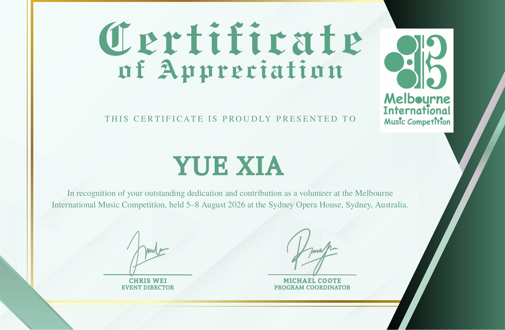

墨尔本国际音乐比赛
志愿者 · 2026/08/05 – 08 · 悉尼歌剧院
2026 年 8 月 5 日至 8 日，墨尔本国际音乐比赛于悉尼歌剧院举行。赛事期间，我作为现场运营志愿者，参与赛事组织与现场执行工作，主要负责参赛选手的候场协调、动线管理及入场引导，并协助完成舞台设施布置、座席配置与现场准备工作。在闭幕式暨庆典音乐会期间，承担后台出入口管控、人员通行协调及现场秩序维护等职责，配合演出团队落实后台管理与观众引导工作，保障赛事及演出环节有序衔接。
PROOF活动证明

由墨尔本国际音乐比赛颁发，证书写明志愿服务时间为 2026 年 8 月 5 日至 8 日，地点为悉尼歌剧院。点击图片可在新标签页查看原图。